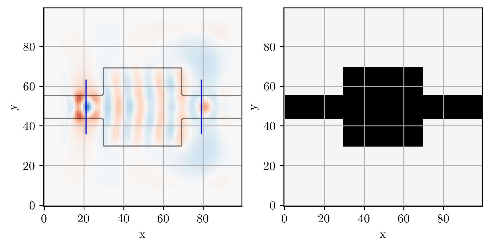
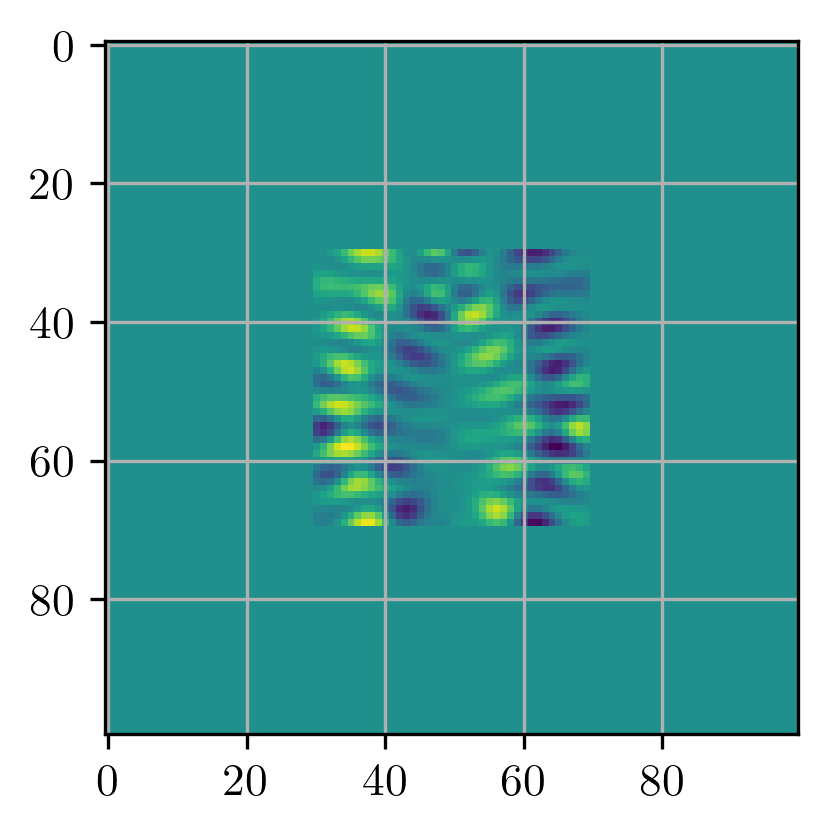
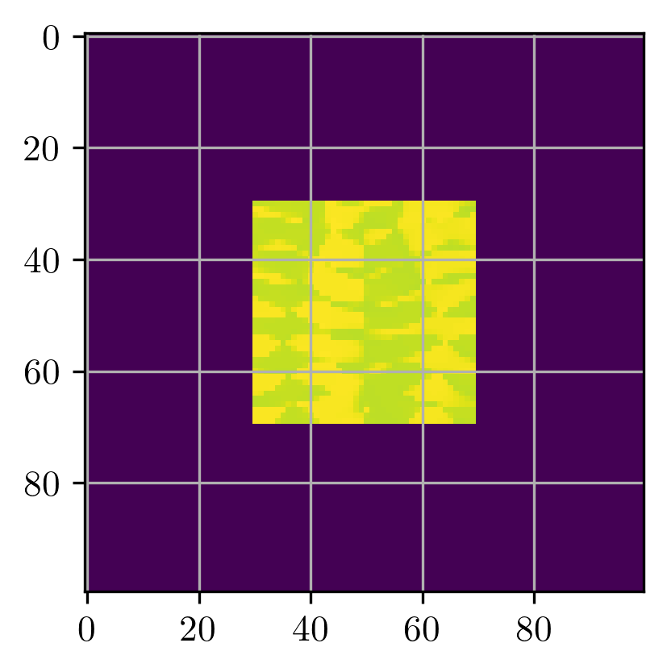
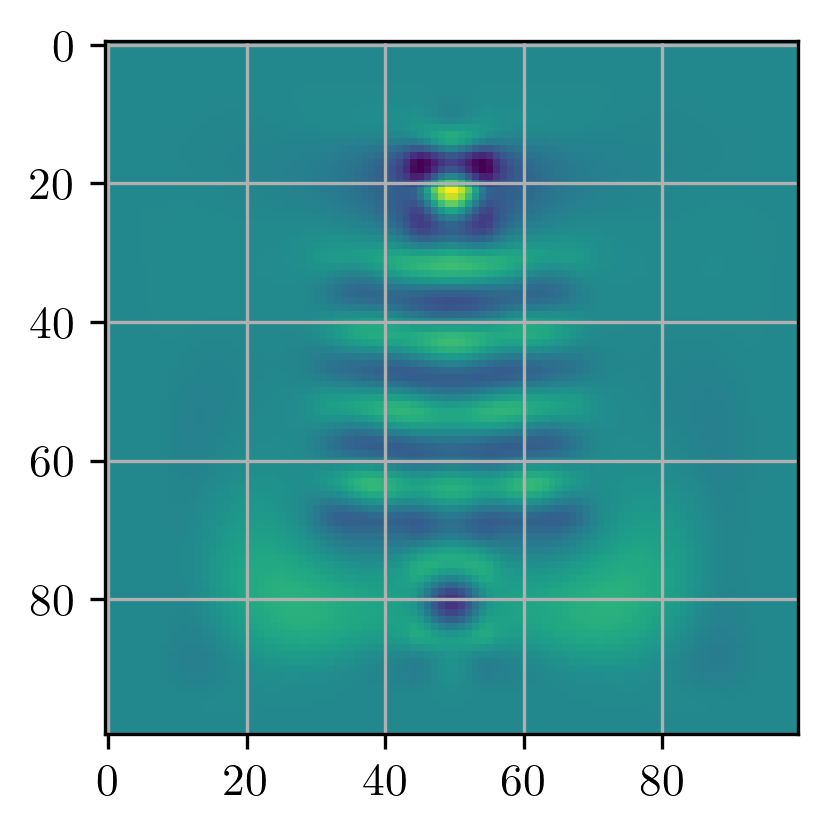

import collections
import autograd.numpy as npa
from ceviche import fdfd_ez, jacobian
from ceviche.modes import insert_mode
from jax.example_libraries.optimizers import adam
from tqdm.notebook import trangeInverse Design Test
example usecase for the ceviche gradients
Preparation
plot_abs
plot_abs (val, outline=None, ax=None, cbar=False, cmap='magma', outline_alpha=0.5, outline_val=None)
Plots the absolute value of ‘val’, optionally overlaying an outline of ‘outline’
plot_real
plot_real (val, outline=None, ax=None, cbar=False, cmap='RdBu', outline_alpha=0.5)
Plots the real part of ‘val’, optionally overlaying an outline of ‘outline’
insert_mode
insert_mode (omega, dx, x, y, epsr, target=None, npml=0, m=1, filtering=False)
Solve for the modes in a cross section of epsr at the location defined by ‘x’ and ‘y’ The mode is inserted into the ‘target’ array if it is suppled, if the target array is not supplied, then a target array is created with the same shape as epsr, and the mode is inserted into it.
Slice = collections.namedtuple('Slice', 'x y')Simulation and optimization parameters
Our toy optimization problem will be to design a device that converts an input in the first-order mode into an output as the second-order mode. First, we define the parameters of our device and optimization:
# Angular frequency of the source in Hz
omega = 2 * np.pi * 200e12
# Spatial resolution in meters
dl = 40e-9
# Number of pixels in x-direction
Nx = 100
# Number of pixels in y-direction
Ny = 100
# Number of pixels in the PMLs in each direction
Npml = 20
# Initial value of the structure's relative permittivity
epsr_init = 12.0
# Space between the PMLs and the design region (in pixels)
space = 10
# Width of the waveguide (in pixels)
wg_width = 12
# Length in pixels of the source/probe slices on each side of the center point
space_slice = 8
# Number of epochs in the optimization
Nsteps = 100
# Step size for the Adam optimizer
step_size = 1e-2Utility functions
We now define some utility functions for initialization and optimization:
def init_domain(
Nx=Nx, Ny=Ny, Npml=Npml, space=space, wg_width=wg_width, space_slice=space_slice
):
"""Initializes the domain and design region
space : The space between the PML and the structure
wg_width : The feed and probe waveguide width
space_slice : The added space for the probe and source slices
"""
# Parametrization of the permittivity of the structure
bg_epsr = np.ones((Nx, Ny))
epsr = np.ones((Nx, Ny))
# Region within which the permittivity is allowed to change
design_region = np.zeros((Nx, Ny))
# Input waveguide
bg_epsr[0 : int(Npml + space), int(Ny / 2 - wg_width / 2) : int(Ny / 2 + wg_width / 2)] = epsr_init
# Input probe slice
input_slice = Slice(
x=np.array(Npml + 1),
y=np.arange(
int(Ny / 2 - wg_width / 2 - space_slice),
int(Ny / 2 + wg_width / 2 + space_slice),
),
)
# Output waveguide
bg_epsr[
int(Nx - Npml - space) : :,
int(Ny / 2 - wg_width / 2) : int(Ny / 2 + wg_width / 2),
] = epsr_init
# Output probe slice
output_slice = Slice(
x=np.array(Nx - Npml - 1),
y=np.arange(
int(Ny / 2 - wg_width / 2 - space_slice),
int(Ny / 2 + wg_width / 2 + space_slice),
),
)
design_region[Npml + space: Nx - Npml - space, Npml + space: Ny - Npml - space] = 1.0
epsr[Npml + space : Nx - Npml - space, Npml + space : Ny - Npml - space] = epsr_init
return epsr, bg_epsr, design_region, input_slice, output_slicedef mask_combine_epsr(epsr, bg_epsr, design_region):
"""Utility function for combining the design region epsr and the background epsr"""
return epsr * design_region + bg_epsr * np.asarray(design_region == 0, dtype=float)def viz_sim(epsr, source, slices=[]):
"""Solve and visualize a simulation with permittivity 'epsr'"""
simulation = fdfd_ez(omega, dl, epsr, [Npml, Npml])
_, _, Ez = simulation.solve(source)
_, ax = plt.subplots(1, 2, constrained_layout=True, figsize=(6, 3))
ceviche.viz.real(Ez, outline=epsr, ax=ax[0], cbar=False)
for sl in slices:
ax[0].plot(sl.x * np.ones(len(sl.y)), sl.y, "b-")
ceviche.viz.abs(epsr, ax=ax[1], cmap="Greys")
plt.show()
return (simulation, ax)def mode_overlap(E1, E2):
"""Defines an overlap integral between the simulated field and desired field"""
return npa.abs(npa.sum(npa.conj(E1) * E2))Visualizing the starting device
We can visualize what our starting device looks like and how it behaves. Our device is initialized by the init_domain() function which was defined several cells above.
# Initialize the parametrization rho and the design region
epsr, bg_epsr, design_region, input_slice, output_slice = init_domain(
Nx, Ny, Npml, space=space, wg_width=wg_width, space_slice=space_slice
)
epsr_total = mask_combine_epsr(epsr, bg_epsr, design_region)
# Setup source
source = insert_mode(omega, dl, input_slice.x, input_slice.y, epsr_total, m=1)
# Setup probe
probe = insert_mode(omega, dl, output_slice.x, output_slice.y, epsr_total, m=2)# Simulate initial device
simulation, ax = viz_sim(epsr_total, source, slices=[input_slice, output_slice])
# get normalization factor (field overlap before optimizing)
_, _, Ez = simulation.solve(source)
E0 = mode_overlap(Ez, probe)
Define objective function
We will now define our objective function. This is a scalar-valued function which our optimizer uses to improve the device’s performance.
Our objective function will consist of maximizing an overlap integral of the field in the output waveguide of the simulated device and the field of the waveguide’s second order mode (minimizing the negative overlap). The function takes in a single argument, epsr and returns the value of the overlap integral. The details of setting the permittivity and solving for the fields happens inside the objective function.
# Simulate initial device
simulation, ax = viz_sim(epsr_total, source, slices=[input_slice, output_slice])
Jaxit
from javiche import jaxit
import jax@jaxit(cache=True)
def loss_fn(epsr, factor):
"""Objective function called by optimizer
1) Takes the epsr distribution as input
2) Runs the simulation
3) Returns the overlap integral between the output wg field
and the desired mode field
"""
#epsr = epsr.reshape((Nx, Ny))
simulation.eps_r = mask_combine_epsr(epsr, bg_epsr, design_region)
_, _, Ez = simulation.solve(source)
return -mode_overlap(Ez, probe) / E0 * factorThe @jaxit() decorator enables the automatic differntiation with the decorated function while internally calculating the gradients using ceviches jacobian which is based on autograd.
grad_fn = jax.grad(loss_fn)With the decorator in place we can
plt.imshow(grad_fn(epsr, 2.0))<matplotlib.image.AxesImage>
init_fn, update_fn, params_fn = adam(step_size)
state = init_fn(epsr)
lossfactor = 2.0def step_fn(step, state):
#latent = np.asarray(params_fn(state), dtype=float) # we need autograd arrays here...
latent = params_fn(state) # we need autograd arrays here...
loss = loss_fn(latent, lossfactor)
grads = grad_fn(latent, lossfactor)
optim_state = update_fn(step, grads, state)
return loss, optim_staterange_ = trange(20)
for step in range_:
loss, state = step_fn(step, state)
range_.set_postfix(loss=float(loss))latent = params_fn(state)
plt.imshow(latent)<matplotlib.image.AxesImage>
simulation.eps_r = mask_combine_epsr(epsr, bg_epsr, design_region)
_, _, Ez = simulation.solve(source)plt.imshow(np.real(Ez))<matplotlib.image.AxesImage>